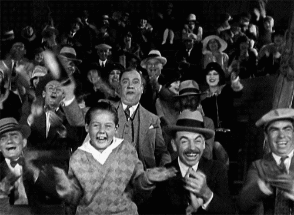

üîç Bild-Test - Rathaus Trainer
Test 1: Startbild
Startbild
Test 2: Endbild

Endbild
Test 3: Querformat (Berlin)

Berlin (Querformat)
Test 4: Hochkant (Braunschweig)

Braunschweig (Hochkant)
Test 5: Hochkant (Kiel)

Kiel (Hochkant)
Test 6: Querformat (München)

München (Querformat)
Test 7: Hochkant (Aachen)

Aachen (Hochkant)
Test 8: Querformat (Hamburg)

Hamburg (Querformat)
Test 9: Hochkant (Halle)

Halle (Hochkant)
Test 10: Querformat (Köln)

Köln (Querformat)
üîç Test-Ergebnisse
Erwartetes Verhalten:
- ✅ Querformatbilder: Sollen die Breite der Box ausfüllen
- ✅ Hochkantbilder: Sollen schmaler sein und die Höhe der Box ausfüllen
- ✅ Start-/Endbilder: Sollen proportional skaliert werden
- ❌ Problem: Hochkantbilder füllen immer noch die ganze Breite aus!